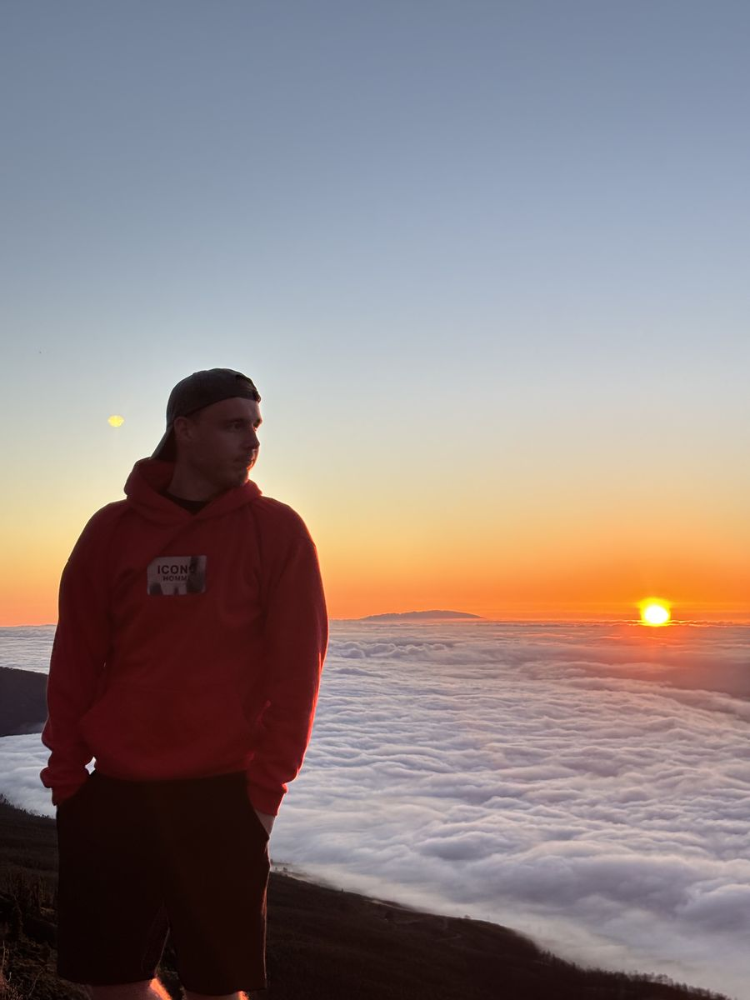

Par mums
Libertas ir vieta, kur mācīšanās nozīmē brīvību — brīvību izteikties, saprast citus un atklāt pasauli no jauna.

Vārds, kas nozīmē brīvību
Nosaukums «Libertas» nāk no latīņu vārda libertas — brīvība. Tas lieliski raksturo mūsu pieeju: valoda nav eksāmens, ko vienkārši nokārtot, bet atslēga, kas atver durvis — uz jaunām sarunām, ceļojumiem, darbu un draugiem citās zemēs.
Libertas sākās ar vienkāršu domu: valodu var iemācīties tikai tad, ja to lieto. Tāpēc nodarbībās mēs vairāk runājam nekā pierakstām — spēlējam, diskutējam, klausāmies un smejamies. Gramatika nāk līdzi dabiski, kā ceļa karte, nevis kā šķērslis.
Apgūt valodu ir ceļojums uz sevi un pasauli. Libertas palīdz atrast īsto ceļojuma maršrutu.
Kam mēs ticam
Četras lietas, kas veido katru Libertas nodarbību.
-
Spāņu un angļu valoda
Piedāvājam spāņu un angļu valodas kursus no A1 līdz B1 līmenim un papildinām kursu klāstu pēc studentu pieprasījuma.
-
Zināšanas atbrīvo
Zināšanas atbrīvo prātu un atver durvis uz jaunām iespējām. Katra jauna frāze ir solis tuvāk brīvai sarunai.
-
Spēles un dzīvas diskusijas
Nodarbībās izmantojam mūsdienīgus materiālus, spēles un dzīvas diskusijas — mācīties var arī ar prieku.
-
Mazas grupas
Mazā grupā katram ir laiks runāt, kļūdīties un saņemt atgriezenisko saiti. Kļūdas šeit ir daļa no ceļa, nevis iemesls kaunēties.
- 6kursu līmeņi — no A1 līdz B1.2
- 14nodarbības vienā spāņu valodas līmenī
- 4valodas bezmaksas materiālos
- 24/7e-kurss pašmācībai jebkurā laikā
Tavs ceļš Libertas
No pirmā «¡Hola!» līdz brīvai sarunai — soli pa solim.
-
Izvēlies līmeni
Sāc no nulles ar A1 vai turpini tur, kur apstājies. Ja šaubies — uzraksti mums, palīdzēsim izvēlēties.
-
Piesakies grupai
Izvēlies grupu ar sev ērtām dienām — pirmdiena un trešdiena vai otrdiena un ceturtdiena — un piesakies tiešsaistē.
-
Mācies 7 nedēļas
14 nodarbības divreiz nedēļā vakaros. Runājam, spēlējam, klausāmies un lietojam valodu dzīvās situācijās.
-
Turpini ceļu
Pēc kursa grupa var turpināt nākamajā līmenī tajās pašās nedēļas dienās — kopā ar tiem pašiem ceļabiedriem.
Grafiks attiecas uz spāņu valodas grupām; angļu valodas grupu datumi vēl tiek precizēti. Ja gribi mācīties savā tempā, izmēģini e-kursu.
Mūsu ceļabiedrs Empanadillo
Mazais ceļotājs pavada tevi pa visu vietni — uzklikšķini uz viņa ekrāna stūrī, un viņš pastāstīs kaut ko noderīgu. Kāpēc tāds vārds? Empanada ir mazs spāņu pīrādziņš ar pildījumu — tāpat kā katra laba nodarbība.
Gatavs sākt savu ceļojumu?
Apskati kursus vai uzraksti mums — atbildēsim uz jautājumiem un palīdzēsim izvēlēties īsto līmeni.